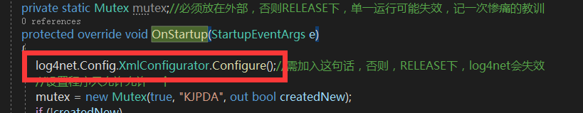

平常开发用Debug，但是发布的时候用Release，应该是很多单位都会用的，但是有的时候你发现Debug下好使，Release下不好使，这就遇到坑了。
我也是这两天连续遇到了两次，在此记录一下，如果以后还有发现这两个区别的，还会继续追加内容。
1、Mutex
软件做的单一启动，也就是软件如果正在运行的话，双击程序，不会启动新的，而是把原有的放到最前面。
参考了WPF 同一个程序 只允许 同时运行一个这篇文章，在Debug下用着不错，挺好用的，但是，当发布成Release的时候，尼玛，不好使，怎么就不好使，Release还不能调试，只能写个TXT输出。
发现，原来在Debug下，第一次的时候createNew是True，第二次的时候createNew是False，但是在Release的时候，两次都是True。
咨询了下群里大神，有可能是Release的时候，被回收了，而且很快的回收掉了，Debug下就没有。
所以，将Mutex放到函数外就可以了。
2、Log4Net
Log4Net，App.config下配置好以后，在Debug下运行没有问题，但是在Release下不起作用，参考WPF中log4net的用法，搞定，就是在启动的时候，添加下configure

以前一直以为Debug就是调试，Release就是发布，从来没有深究过他们有多大的差别，但是，现在看来差别上还是很大的，给自己做个记录，也提个醒。